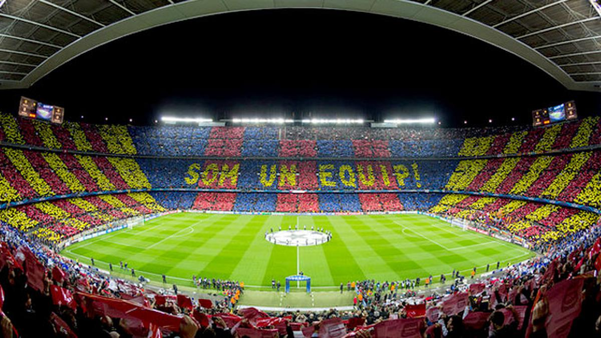

Spotify Camp Nou
Stadion Barcelona yang terkenal, Spotify Camp Nou, memegang peranan sentral dalam sejarah sepak bola dan identitas kota Barcelona. Dengan kapasitasnya yang mengesankan yang dapat menampung lebih dari 99.000 penonton, Camp Nou menjadi ikon global dalam dunia sepak bola. Lapangan rumput alaminya yang terawat dengan baik, fasilitas modern termasuk museum klub, toko suvenir, dan restoran, serta atmosfer yang elektrik selama pertandingan membuatnya menjadi salah satu destinasi utama bagi penggemar sepak bola dari seluruh dunia. Selain menjadi kandang bagi FC Barcelona sejak 1957, Camp Nou juga menyaksikan berbagai pertandingan legendaris dan momen-momen penting dalam sejarah olahraga. Terletak di distrik Les Corts, stadion ini adalah simbol kebanggaan bagi pendukung Barcelona dan merupakan tujuan wajib bagi setiap penggemar sepak bola yang mengunjungi Barcelona.
Kota Barcelona
Barcelona, kota yang memukau di pesisir timur laut Spanyol, adalah perpaduan yang memikat antara warisan sejarah yang kaya dan gaya hidup modern yang bersemangat. Dikenal karena arsitektur yang menakjubkan, terutama karya-karya Antoni Gaudí seperti Sagrada Família dan Park Güell, Barcelona menawarkan pengalaman budaya yang tak tertandingi. Jalan-jalan yang berliku di distrik kuno seperti Barri Gòtic memperlihatkan warisan Romawi dan Mediterania kota ini, sementara jalan-jalan raya yang luas, taman-taman yang indah, dan pantai yang memikat menampilkan sisi modern yang dinamis. Kehidupan malam yang berdenyut dengan klub-klub malam yang bergaya, restoran-restoran berkelas, dan bar-bar tapas yang ramai menciptakan suasana yang terus berdenyut hingga dini hari. Barcelona adalah kota yang menarik perhatian dengan pesonanya yang tak terbantahkan, menjadikannya salah satu destinasi paling populer di Eropa bagi wisatawan dari seluruh dunia..